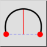
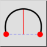
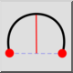
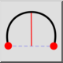

2 punkter og højde
Værktøjslinje/ikon:
 

Menu: Tegne > Bue > 2 punkter og højde
Genvej: A, H
Kommandoer: archeight | ah
Dette er en automatisk oversættelse.
Værktøjslinje/ikon:
 

Menu: Tegne > Bue > 2 punkter og højde
Genvej: A, H
Kommandoer: archeight | ah
Tegner en bue ved hjælp af startpunktet, slutpunktet og buehøjden.